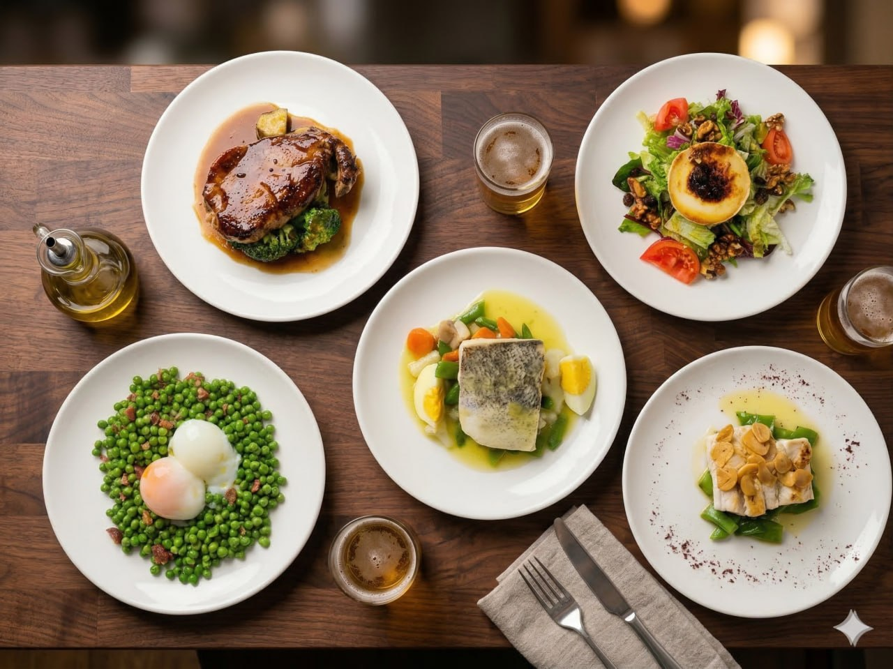
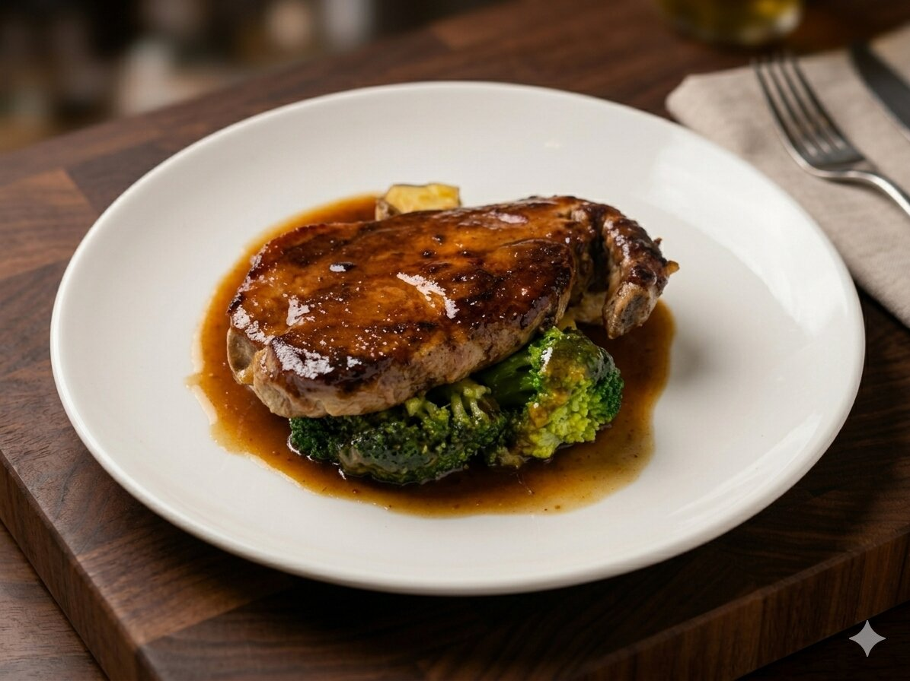
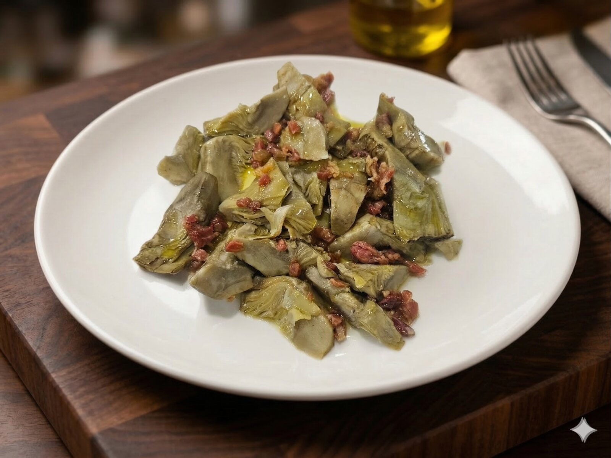
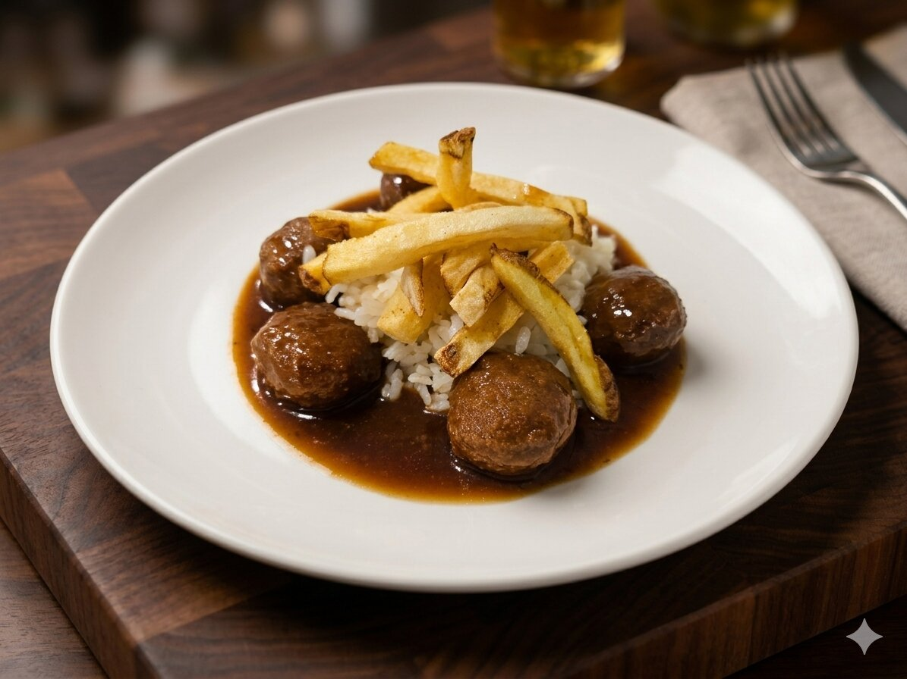
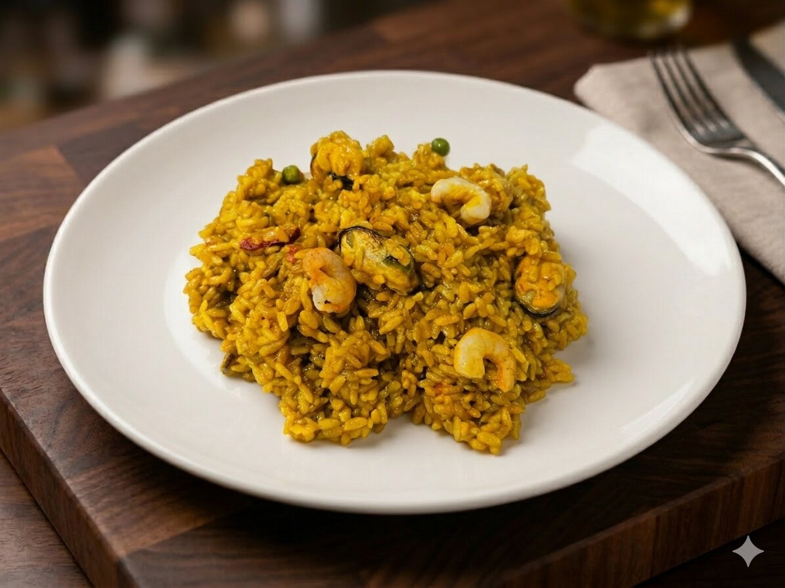
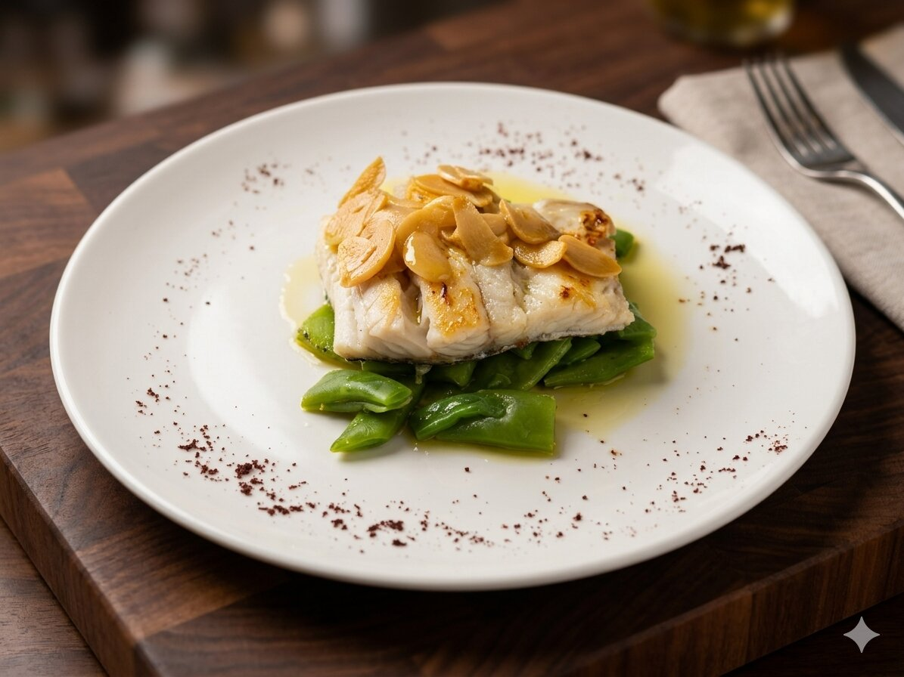
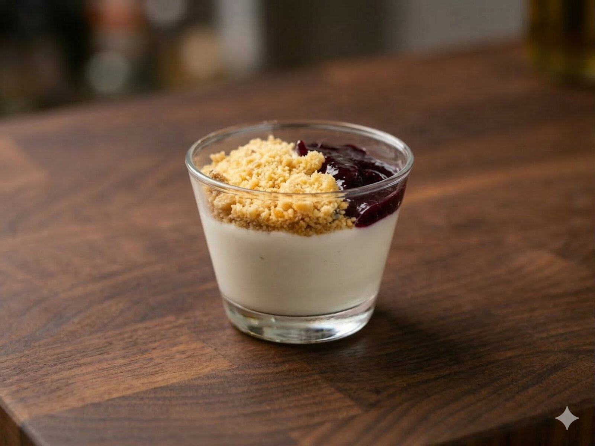

Menú del día · Albasanz
Menú del día Smithers.
Primero, segundo, postre, pan y bebida por 16,50€. Cocina de diario, pero con ganas.

Platos de cuchara, arroces, carnes y pescados. Todo casero, todo fresco, desde 16,50€.
16,50€
Incluye primero, segundo, postre y pan. Bebida: agua, agua con gas, refresco, doble cerveza de tiro o copa de vino blanco/tinto.
Segundo refresco +1,00€ · Tercio de cerveza +2,00€ · Segunda ración de pan +0,50€ · Pan sin gluten +0,50€
Comida real
Así se ve lo que comes.





